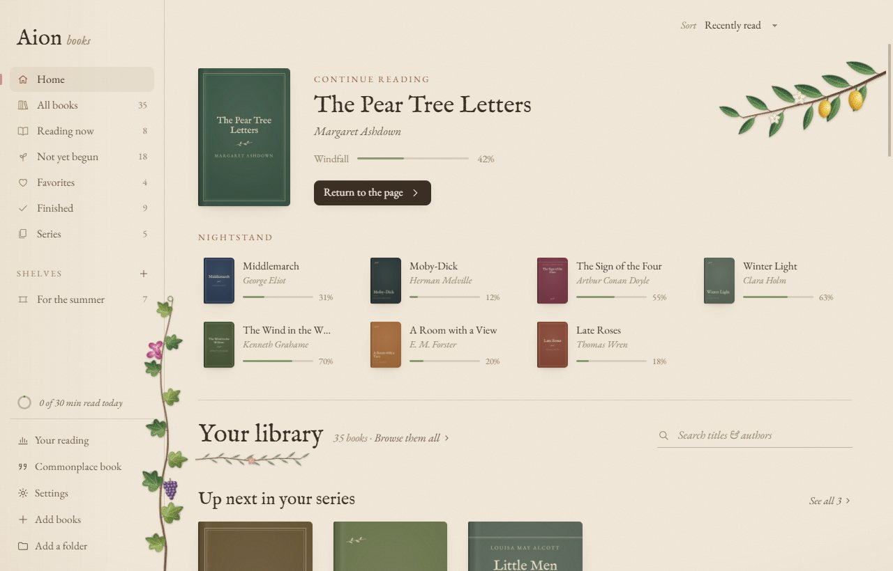
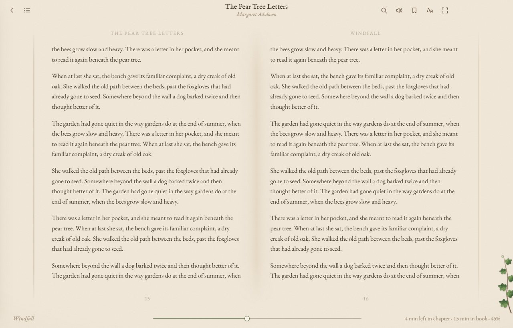
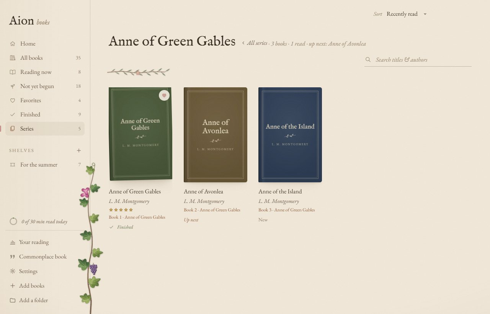
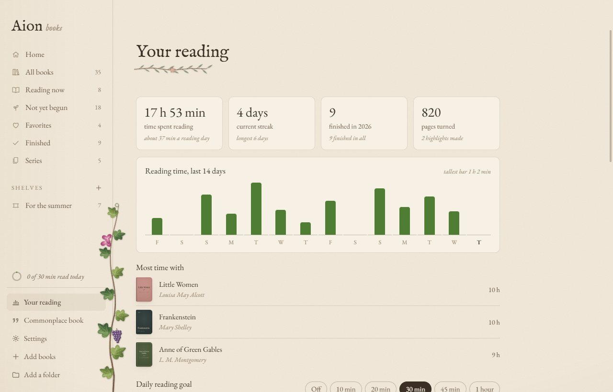
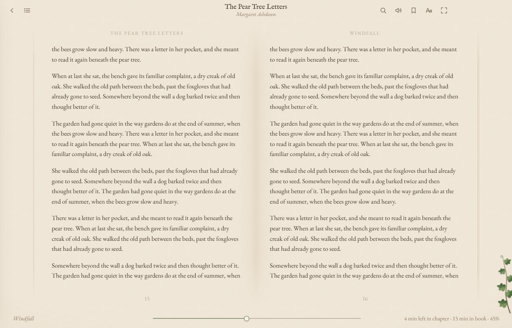

Series, sorted
Books in a series are grouped and shown in reading order, with the ones you're missing marked — even when the file doesn't say which series it's in.
Aion Books is a free e-book reader and library for Windows. Pages feel like lightly weathered paper, a few painted botanicals grow in the margins, and everything else stays out of the way of the words.

EPUB, Kindle (MOBI, AZW3), PDF, comics (CBZ) and FictionBook (FB2), all in one reader and one library.
Books in a series are grouped and shown in reading order, with the ones you're missing marked — even when the file doesn't say which series it's in.
The page peels from the corner and rolls over. Page edges at either side show how far through the book you are.
Mark passages in three colors and write in the margins. Your commonplace book gathers every one, from every book.
Listen with the voices built into Windows, following along sentence by sentence. Works offline.
Select a character's name to see where they were first mentioned — looking back only, so nothing is spoiled.
Time spent reading, streaks, a daily goal and a year in books, month by month.
Three papers, including a dark Dusk, four typefaces (or your own), one or two pages, and time left learned from how fast you read.
No account, no tracking. Your library lives in one folder you can back up — or keep in OneDrive to share between PCs.
A two-page spread with running heads and page numbers, like a printed book, on warm paper with a fine grain. Choose the typeface, the size, the spacing and the margins.
Search the book, look up a word, check a footnote without losing your place — and jump straight back after any detour.

Your books in reading order, with the ones you don't have yet marked where they fall, how many you've read and what's up next.
When a book's file doesn't say which series it belongs to, Aion can look it up for you — and asks before it changes anything.

How long you've read, your streak, the books you finished this year and the ones you spent the most time with — and a small ring that fills as you reach your daily goal.

Linen, a soft off-white; Parchment, warmer and older; and Dusk, a dark paper that's easy on the eyes at night — which can follow Windows' own light and dark mode.
Try them on this page:

Add books by dropping them on the window, from a folder, or by saving them into a folder Aion watches.
| Format | Files | Notes |
|---|---|---|
| EPUB | .epub | Reflowable and fixed-layout, EPUB 2 and 3 |
| Kindle | .mobi .azw3 .azw .prc | Books without DRM |
.pdf | Pages shown as they were printed | |
| Comics | .cbz | A page at a time, or two side by side |
| FictionBook | .fb2 .fbz | Common for Russian-language books; plain or zipped |
Books bought with DRM (copy protection) can't be opened — as with any reader that isn't the store's own.
Yes. Aion Books is free and open source, under the MIT license. There are no ads, no account and no in-app purchases.
Yes, Kindle files (MOBI, AZW3, AZW) without DRM. Books still locked to Amazon’s apps can’t be opened.
Yes. PDFs are shown as they were printed, and comic books (CBZ) a page at a time or two side by side.
Completely. It only goes online when you look up a word, a character or a book’s series, and to check for updates — each of which you can turn off or simply not use.
Not yet. Aion Books is made for Windows 10 and 11.
In one folder on your PC, which you can back up with one click or move — to a OneDrive or Dropbox folder, say, to share your library and reading progress between PCs.
New versions download quietly in the background and install the next time you restart Aion Books.
Free, open source and private. It keeps itself up to date.
Download for Windows